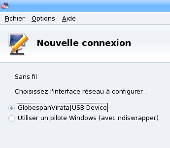
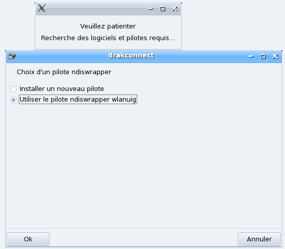
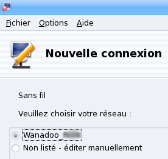
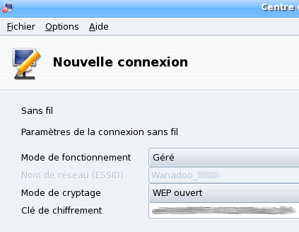
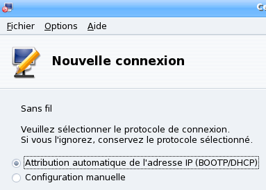
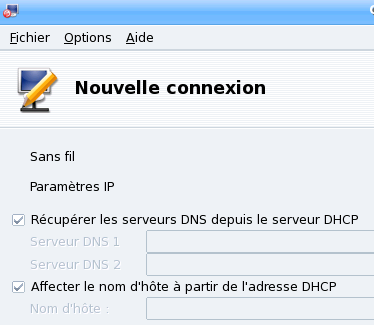
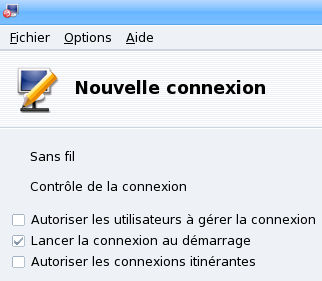
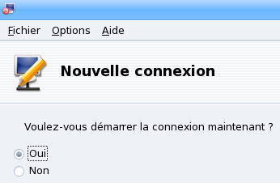

Avant de nous lancer dans l'installation du dongle, je tiens à vous préciser que pour poursuivre l'installation, il faut connaître son mot de passe de super-utilisateur pour pouvoir faire les commandes dans la console en root.
Téléchargez les fichiers qui suivent dans /home/votre_nom/Téléchargements/Wifi, par exemple.
Les drivers de votre dongle, pour ceux qui ont la clé fournie avec la LiveBox de la Sagem (la XG-760A), je mets à votre disposition ces drivers => ici.
Il vous faut ensuite la dernière version de ndiswrapper, un petit truc vachement utile pour reconnaître notre dongle. ^^ Vous trouverez ici la dernière version sortie à ce jour, et vous trouverez là la dernière version actuelle, au cas où celle que je vous propose est dépassée.
Voilà, nous sommes enfin prêts à installer notre dongle ! :p
Allez, allez, ce n'est pas le moment de s'endormir entre deux clics, c'est maintenant que les choses sérieuses commencent ! :-° Mais rassurez-vous, ce n'est pas bien difficile. ;)
On commence par ouvrir notre petite console favorite et l'on se connecte en tant que super-utilisateur via la commande su.
[djlechuck@localhost ~]$ su
Mot de passe:
[root@localhost djlechuck]#
Nous allons maintenant désinstaller le ndiswrapper de base car il ne fonctionne pas. Pour ce faire, rien de plus simple :
[root@localhost djlechuck]# urpme ndiswrapper
(Je ne vous montre pas ce que cela fait car sinon ma connexion va planter, et je ne pourrais pas continuer le tuto. :lol: )
Voilà : maintenant, on va vérifier si l'on a besoin d'installer kernel-source, indispensable pour l'utilisation de ndiswrapper.
Alors là, ça va être très court. :p Mais j'ai préféré le faire dans une partie à part entière pour ne pas que vous vous embrouilliez dans toutes les commandes à réaliser, et puis là, on va installer le dongle. ^^
On se met en root et l'on se rend dans le dossier où se trouve Drivers.tar.gz téléchargé précédemment.
[djlechuck@localhost ~]$ su
Mot de passe:
[root@localhost djlechuck]# cd Téléchargements/Wifi
[root@localhost Wifi]#
On extrait le tout et on se rend dans le dossier <couleur nom="bleu">Drivers</couluer qui a été créé.
[root@localhost Wifi]# tar xvf Drivers.tar.gz
Drivers/
Drivers/WlanUIG.inf
Drivers/WlanUIG.sys
[root@localhost Wifi]# cd Drivers/
[root@localhost Drivers]#
On va maintenant dire à ndiswrapper quel driver utiliser pour reconnaître notre dongle. Pour ce faire, il suffit de taper la commande qui suit :
Et voilà, c'est fini ; maintenant, on va configurer notre connexion pour pouvoir enfin surfer sous Linux. :D Ce qui est bien, c'est que l'on n'a plus besoin de la console. ;)
On arrive presque au bout : courage, le plus dur est passé. :) On se rend dans le Centre de Contrôle, partie Réseau & Internet.
On clique sur Configurer une nouvelle connexion Internet(LAN, ISDN, ADSL, ...) et l'on choisit Sans fil. Après avoir cliqué sur Suivant, on arrive sur cette page :

Faites Suivant et attendez quelques instants pour voir cette nouvelle fenêtre :

Faites Ok et attendez. Cette nouvelle fenêtre devrait apparaître :

Faites Suivant et entrez votre clé WEP en minuscules et tout attaché, sans les séparations :

Faites Suivant et laissez coché Attribution automatique de l'adresse IP (BOOTP/DHCP).

Faites Suivant et laissez coché les deux cases :

Faites Suivant et laissez coché Lancer la connexion au démarrage.

Faites Suivant et cochez Oui. :p

Une dernière fois Suivant et... félicitations ! Votre connexion est établie ! :D
Alors, on dit merci qui ? ;) Avant de me quitter et de courir partout dans votre maison parce que cela fonctionne, si vous voulez essayer de configurer la connexion automatique au boot, lisez la suite. ^^
Comme je vous l'ai dit précédemment, il y a un moyen pour que la connexion s'établisse au boot du PC, mais comme je l'ai également dit, chez moi, cela ne fonctionne pas et je suis obligé de refaire la connexion à chaque fois via le Centre de Contrôle. ;)
Étant donné que ces explications ne viennent pas de moi, et que je n'ai rien modifié, je vous dis bonne chance. :p Je précise seulement qu'avant, il faut installer dhcpcd et wireless-tools.
[djlechuck@localhost ~]$ su
Mot de passe:
[root@localhost djlechuck]# urpmi dhcpcd
[blabla]
[root@localhost djlechuck]# urpmi wireless-tool
[blabla]
[root@localhost djlechuck]#
En tant que root, créez le fichier de configuration /etc/sysconfig/livebox contenant (remplacez les XXXX par votre vraie clef WEP !) :
#Périphérique
WLAN="wlan0"
#ESSID de la livebox
ESSID="WANADOO-XXXX"
#Clef WEP
WEP="XXXX-XXXX-XXXX-XXXX-XXXX-XXXX-XX"
Créez le script de démarrage /etc/init.d/livebox contenant :
#!/bin/sh
# (c) Lea-Linux, Jean-Christophe Cardot <jice(at)lea(dash)linux(dot)org>
#
# livebox This shell script takes care of starting and stopping
# your livebox's wifi dongle and configure it.
#
# chkconfig: 2345 12 88
# description: This startup script configures the Livebox's USB wifi dongle
if [ -f /etc/sysconfig/livebox ];then
source /etc/sysconfig/livebox
fi
PIDFILE=/etc/dhcpc/dhcpcd-$WLAN.pid
. /etc/rc.d/init.d/functions
function get_ip() {
ip_wlan=$(ifconfig $WLAN 2>&1 \
| grep "inet adr:" \
| cut -d' ' -f 12 | cut -d':' -f 2)
if [ "$ip_wlan" = "127.0.0.1" ]; then
unset ip_wlan
fi
}
function wifistart() {
# test if already started
unset ip_wlan
get_ip
if [ "x$ip_wlan" != "x" ]; then
echo "Wifi already started!"
exit 0
fi
# make sure dhcpcd is stopped
if [ -s $PIDFILE ] \
&& ps aux | cut -b10-15 | grep -q `cat $PIDFILE`; then
kill -SIGTERM `cat $PIDFILE` 2>&1 >/dev/null
fi
rm -rf $PIDFILE 2>&1 >/dev/null
action "Lancement de NDISWrapper" \
modprobe ndiswrapper
action "Lancement du wifi Livebox" \
iwconfig $WLAN mode managed essid $ESSID key $WEP
action "Obtention d'une adresse IP avec DHCP" \
/sbin/dhcpcd wlan0
get_ip
echo "Adresse IP : $ip_wlan"
}
function wifistop() {
action "Arrêt du wifi Livebox" \
ifconfig $WLAN down
action "Arrêt de NDISWrapper" \
rmmod ndiswrapper
if [ -s $PIDFILE ] \
&& ps aux|cut -b10-15|grep -q `cat $PIDFILE`; then
action "Arrêt de dhcpcd" \
kill -SIGTERM `cat $PIDFILE`
fi
rm -rf $PIDFILE 2>&1 >/dev/null
}
case $1 in
start)
wifistart
exit 0
;;
stop)
wifistop
exit 0
;;
status)
if fgrep -q ndiswrapper /proc/modules; then
gprintf "NDISWrapper loaded."
echo
else
gprintf "NDISWrapper not loaded."
echo
fi
if ifconfig 2>&1 | grep -q $WLAN; then
gprintf "$WLAN wireless interface loaded."
echo
else
gprintf "$WLAN wireless interface not loaded."
echo
fi
unset ip_wlan
get_ip
if [ "x$ip_wlan" = "x" ]; then
gprintf "No IP address"
echo
else
gprintf "IP Adress: $ip_wlan"
echo
fi
exit 0
;;
restart)
;;
reload)
$0 stop
$0 start
exit 0
;;
*)
gprintf "Usage: %s\n" "$(basename $0) {start|stop|restart|status}"
exit 0
;;
esac
exit 0
Enfin, ajoutez ce script au démarrage :
[root@localhost ~]# chkconfig --add livebox
Voilà, la configuration est enfin terminée. Profitez bien de votre Livebox !
Note : ces changements prendront effet au prochain redémarrage de la machine. Pour éviter de redémarrer, il suffit de taper la commande suivante pour lancer le wifi :
[root@localhost ~]# service livebox start
Conclusion
Et voilà ! Dorénavant, vous avez votre connexion internet et vous êtes contents. Vous allez pouvoir venir visionner le Site du Zér0 depuis Linux... Le pied... :p
Je tiens à remercier mattux, grâce à qui j'ai fait ce tuto car j'ai pompé ses idées données sur le forum (même si une de ses idées faisait tout planter :-° ) ; grâce à sa mauvaise idée d'ailleurs, j'ai passé 8 h devant mon PC à régler un truc non-réglable. :lol:
Bon, allez : j'arrête de raconter ma vie maintenant, bonne chance pour la suite, amis Linuxiens. ^^